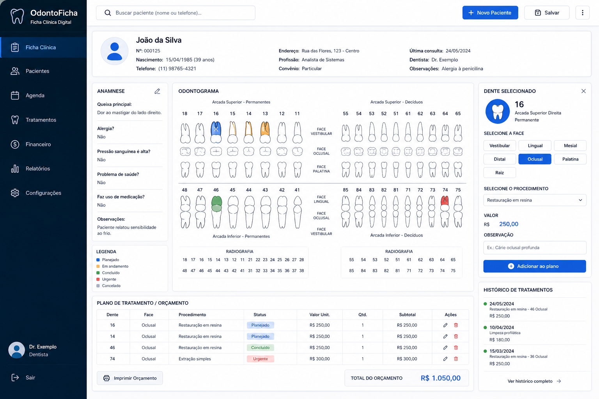
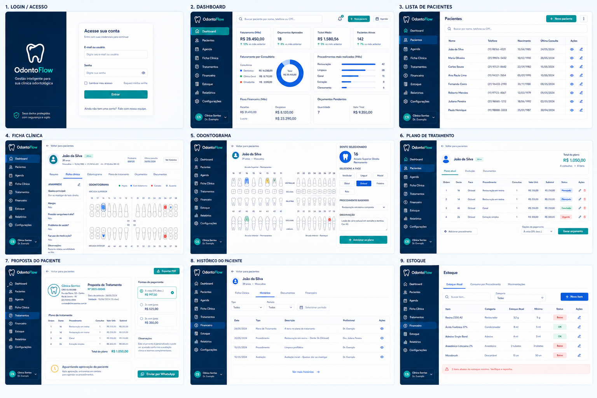

Odontograma preenchido à mão
Marcações manuais dificultam atualização, leitura e padronização do histórico.
Uma proposta de sistema para pequenos consultórios: digitalize o odontograma, monte planos de tratamento, gere orçamentos e acompanhe o histórico clínico em uma interface parecida com a ficha que o dentista já usa.
Produto em desenvolvimento. Esta página apresenta o conceito, fluxo e telas planejadas para validação com dentistas.

O fluxo clínico tradicional funciona, mas gera retrabalho, dificulta consultas futuras e separa informações que deveriam estar no mesmo lugar.
Marcações manuais dificultam atualização, leitura e padronização do histórico.
Fichas, observações e orçamentos ficam separados e difíceis de consultar.
O dentista precisa calcular valores, consultas e etapas fora da ficha clínica.
O OdontoFicha preserva o modelo mental da ficha física, mas adiciona automação para plano de tratamento, orçamento, cronograma e estoque.
Clique no dente, selecione a face e registre o procedimento sem sair da tela clínica.
Todos os procedimentos planejados e realizados ficam vinculados ao paciente.
Valores, etapas e número estimado de consultas entram automaticamente no plano.
O paciente entende a sequência do tratamento e a quantidade prevista de consultas.
KPIs simples mostram orçamento, faturamento, procedimentos e desempenho por consultório.
Os insumos são abatidos conforme os procedimentos confirmados pelo dentista.
Prints conceituais das telas pensadas para reproduzir o fluxo real do consultório, substituindo a ficha em papel por uma experiência digital simples e objetiva.
A entrada do sistema começa pela busca do paciente. Se ele já existir, a ficha é aberta com o histórico completo. Se for novo, o cadastro é criado rapidamente.

O odontograma é o centro da experiência. O dentista escolhe o dente, define a face, seleciona o procedimento e visualiza o valor de forma imediata.
Cada item selecionado entra automaticamente no plano do paciente, com dente, face, procedimento, valor e número previsto de consultas.
A versão para paciente mostra procedimentos, etapas, quantidade estimada de consultas e valor total, sem expor observações internas do dentista.
O sistema acompanha o fluxo natural do atendimento, sem tentar substituir agenda, convênio ou rotinas que o consultório já resolveu.
Busque pelo nome ou telefone e abra a ficha clínica.
Use o odontograma para escolher o dente e a face.
O preço e o número de consultas aparecem automaticamente.
Os itens entram no plano de tratamento do paciente.
Exporte uma versão clara para envio ao paciente.
Cada procedimento pode ter uma receita de consumo. Quando o dentista confirma o tratamento, o sistema calcula os insumos utilizados, atualiza o saldo e sinaliza itens críticos.
A landing page existe para descobrir se o fluxo resolve uma dor real antes de construir um sistema grande. A próxima etapa é conversar com dentistas, entender a rotina de atendimento e priorizar o MVP.
Mapear como o consultório usa ficha, odontograma, orçamento e retorno do paciente.
Validar as telas principais antes de investir em cadastro, login e banco de dados.
Construir primeiro paciente, odontograma, plano de tratamento e orçamento exportável.
O objetivo é simples: manter a lógica da ficha clínica tradicional, mas reduzir retrabalho, cálculo manual e perda de histórico.
Entrar na validação Rever fluxo